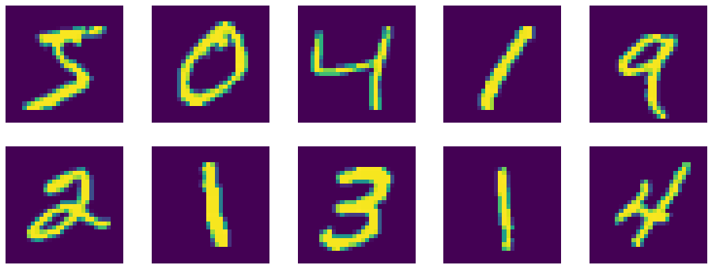

Exercício 4
Conteúdo
Exercício 4¶
Este exercício é baseado no material do curso Deep Learning oferecido pelo NYU Center for Data Science, disponível no endereço https://atcold.github.io/pytorch-Deep-Learning/en/week03/03-3/
Neste exercício, você vai treinar uma rede MLP e uma CNN para classificação de imagens de dígitos numéricos manuscritos do banco de dados MNIST.
Inicialmente, será apresentado o código para o treinamento de arquiteturas simples usando o PyTorch. Procure entender a estrutura do código e a arquitetura das redes utilizadas. Para facilitar, foram adicionados alguns comentários e pode ser utilizada a documentação.
A ideia do exercício é que vocês se familiarizem com uma implementação mais prática de uma aplicação de redes neurais, executem o código para obter o desempenho dos modelos básicos e, por fim, explorem possibilidade de modificação nos modelos, em busca de um desempenho melhor.
Importando as bibliotecas¶
Para executar o Notebook, é necessário que o PyTorch e as bibliotecas básicas de computação numérica do Python estejam instaladas. Uma forma simples de fazer a instalação é usar a distribuição Anaconda, conforme descrito no tutorial disponível em https://realpython.com/python-windows-machine-learning-setup/.
import torch
import torch.nn as nn
import torch.nn.functional as F
import torch.optim as optim
from torchvision import datasets, transforms
import matplotlib.pyplot as plt
import numpy
Carregando os dados (MNIST)¶
O PyTorch tem algumas rotinas para carregar datasets clássicos. Vamos usar essas rotinas para carregar o MNIST. Os dados vão ser obtidos da internet e gravados na mesma pasta deste notebook, em uma pasta chamada data.
Além disso, vamos criar um DataLoader que vai misturar e normalizar os dados:
input_size = 28*28 # imagens com 28x28 pixels
output_size = 10 # 10 classes
train_loader = torch.utils.data.DataLoader(
datasets.MNIST('./data', train=True, download=True,
transform=transforms.Compose([
transforms.ToTensor(),
transforms.Normalize((0.1307,), (0.3081,))
])),
batch_size=64, shuffle=True)
test_loader = torch.utils.data.DataLoader(
datasets.MNIST('./data', train=False, transform=transforms.Compose([
transforms.ToTensor(),
transforms.Normalize((0.1307,), (0.3081,))
])),
batch_size=1000, shuffle=True)
Podemos mostrar algumas imagens do dataset usando o DataLoader que criamos:
plt.figure(figsize=(16, 6))
for i in range(10):
plt.subplot(2, 5, i + 1)
image, _ = train_loader.dataset.__getitem__(i)
plt.imshow(image.squeeze().numpy())
plt.axis('off');

Modelos¶
Aqui definimos as arquiteturas dos modelos. Estamos considerando duas: uma MLP e uma CNN. No PyTorch, os modelos são definidos a partir de classes que herdam de nn.Module, que depois devem ter objetos instanciados.
class MLP(nn.Module):
def __init__(self, input_size, n_hidden, output_size):
super(MLP, self).__init__()
self.input_size = input_size
self.network = nn.Sequential(
nn.Linear(input_size, n_hidden),
nn.ReLU(),
nn.Linear(n_hidden, n_hidden),
nn.ReLU(),
nn.Linear(n_hidden, output_size),
nn.LogSoftmax(dim=1)
)
def forward(self, x):
x = x.view(-1, self.input_size)
return self.network(x)
class CNN(nn.Module):
def __init__(self, n_feature):
super(CNN, self).__init__()
self.n_feature = n_feature
self.conv1 = nn.Conv2d(in_channels=1, out_channels=n_feature, kernel_size=5)
self.conv2 = nn.Conv2d(n_feature, n_feature, kernel_size=5)
self.fc1 = nn.Linear(n_feature*4*4, 50)
self.fc2 = nn.Linear(50, 10)
def forward(self, x, verbose=False):
x = self.conv1(x)
x = F.relu(x)
x = F.max_pool2d(x, kernel_size=2)
x = self.conv2(x)
x = F.relu(x)
x = F.max_pool2d(x, kernel_size=2)
x = x.view(-1, self.n_feature*4*4)
x = self.fc1(x)
x = F.relu(x)
x = self.fc2(x)
x = F.log_softmax(x, dim=1)
return x
Note que MLP tem 2 camadas, sendo 1 oculta e uma de saída. Além disso, está parametrizada em termos do tamanho do vetor de entrada input_size, número de neurônios da camada oculta n_hidden e número de neurônios da camada de saída output_size.
Já a CNN tem 2 camadas convolucionais com ativação ReLU, intercaladas com camadas de Pooling e duas camadas de neurônios totalmente conectados na saída. Ela está parametrizada em termos do número de filtros n_feature usado pelas camadas convolucionais. Considerando imagens 28x28 em escala de cinza do dataset MNIST:
A saída da primeira camada convolucional tem dimensão \(24 \times 24 \times\)
n_feature(n_featurefiltros \(5 \times 5\))A saída da primeira camada de Polling tem dimensão \(12 \times 124 \times\)
n_featureA saída da segunda camada convolucional tem dimensão \(8 \times 8 \times\)
n_feature(n_featurefiltros \(5 \times 5\))A saída da segunda camada de Polling tem dimensão \(4 \times 4 \times\)
n_featurePor isso, o número de neurônios da primeira camada totalmente conectada é \(4 \times 4 \times\)
n_feature
Note que nas saídas de ambas as redes é usada a função de ativação log_softmax. Essa função tem um dempenho melhor que a softmax porque evita o desvanecimento dos gradientes. Para mais informações, leia a seção LogSoftMax vs. SoftMax no endereço https://atcold.github.io/pytorch-Deep-Learning/en/week02/02-2/.
Funções para treinamento e teste¶
O PyTorch facilita o uso de uma GPU para treinamento de modelos, caso esteja disponível. Basta mandar os dados e o modelo para o dispositivo da GPU e o framework se encarrega dos detalhes. Para permitir executar o código em máquinas com ou sem GPU, vamos criar a variável device que vai representar a GPU, caso exista, ou a CPU:
device = torch.device("cuda:0" if torch.cuda.is_available() else "cpu")
O PyTorch é um framework muito versátil, que permite a criação de modelos e rotinas de treinamento customizadas de forma fácil. Ao contrário do que ocorre com o TensorFlow, no PyTorch, o loop de treinamento deve ser escrito explicitamente. A seguir são definidas funções para treinamento e teste da rede, considerando uma época:
accuracy_list = []
# Função para retornar o número de parâmetros de um modelo
def get_n_params(model):
np=0
for p in list(model.parameters()):
np += p.nelement()
return np
def train(epoch, model):
# Coloca o modelo em modo de treinamento
model.train()
# Loop sobre os mini-batches, fornecidos pelo DataLoader train_loader
for batch_idx, (data, target) in enumerate(train_loader):
# Para mandar os dados para o device (GPU ou CPU definido anteriormente), usamos o método .to(device)
data, target = data.to(device), target.to(device)
# Ajuste de dimensões
data = data.view(-1, 1, 28, 28)
# Necessário no PyTorch, para limpar o cache de gradientes acumulados
optimizer.zero_grad()
# Cálculo da saída
output = model(data)
# nll_loss é a função custo da entropia cruzada
loss = F.nll_loss(output, target)
# cálculo dos gradientes
loss.backward()
# atualização dos parâmetros do modelo
optimizer.step()
# Exibe o status do treinamento
if batch_idx % 100 == 0:
print('Train Epoch: {} [{}/{} ({:.0f}%)]\tLoss: {:.6f}'.format(
epoch, batch_idx * len(data), len(train_loader.dataset),
100. * batch_idx / len(train_loader), loss.item()))
def test(model):
# Coloca o modelo em modo de teste
model.eval()
# Variáveis usadas para contabilizar o valor da função custo e número de acertos
test_loss = 0
correct = 0
# Loop sobre os mini-batches, fornecidos pelo DataLoader test_loader
for data, target in test_loader:
# Para mandar os dados para o device (GPU ou CPU definido anteriormente), usamos o método .to(device)
data, target = data.to(device), target.to(device)
# Ajuste de dimensões
data = data.view(-1, 1, 28, 28)
# Cálculo da saída
output = model(data)
# Valor da função custo
test_loss += F.nll_loss(output, target, reduction='sum').item() # sum up batch loss
# Cálculo do número de acertos
pred = output.data.max(1, keepdim=True)[1] # get the index of the max log-probability
correct += pred.eq(target.data.view_as(pred)).cpu().sum().item()
# Mostra o desempenho obtido no teste
test_loss /= len(test_loader.dataset)
accuracy = 100. * correct / len(test_loader.dataset)
accuracy_list.append(accuracy)
print('\nTest set: Average loss: {:.4f}, Accuracy: {}/{} ({:.0f}%)\n'.format(
test_loss, correct, len(test_loader.dataset),
accuracy))
Treinamento da MLP¶
# número de neurônios da camada oculta
n_hidden = 8
# Instanciando o modelo
model_fnn = MLP(input_size, n_hidden, output_size)
# Para mandar o modelo para o device (GPU ou CPU definido anteriormente), usamos o método .to(device)
model_fnn.to(device)
# Definição do otimizador a ser utilizado. Aqui é usado o SGD, que usa o gradiente descendente com momentum
optimizer = optim.SGD(model_fnn.parameters(), lr=0.01, momentum=0.5)
# Mostra o número de parâmetros do modelo
print('Number of parameters: {}'.format(get_n_params(model_fnn)))
# Loop das épocas de treinamento. Aqui é usada apenas 1 época.
for epoch in range(0, 1):
train(epoch, model_fnn)
test(model_fnn)
Treinamento da CNN¶
# Número de filtros das camadas convolucionais
n_features = 6
# Instanciando o modelo
model_cnn = CNN(n_features)
# Para mandar o modelo para o device (GPU ou CPU definido anteriormente), usamos o método .to(device)
model_cnn.to(device)
# Definição do otimizador a ser utilizado. Aqui é usado o SGD, que usa o gradiente descendente com momentum
optimizer = optim.SGD(model_cnn.parameters(), lr=0.01, momentum=0.5)
# Mostra o número de parâmetros do modelo
print('Number of parameters: {}'.format(get_n_params(model_cnn)))
# Loop das épocas de treinamento. Aqui é usada apenas 1 época.
for epoch in range(0, 1):
train(epoch, model_cnn)
test(model_cnn)
Propostas de modificações¶
Os desempenhos dos modelos apresentados são aproximadamente:
85% para a MLP
95% para a CNN
Note que o número de parâmetros dos dois modelos é semelhante, indicando que a CNN é mais adequada para o processamento de imagens, conforme esperado.
Com base nesses dois modelos, proponha modificações em busca da melhoria do desempenho, com base nas técnicas que foram vistas nas aulas, por exemplo:
Mudanças na arquitetura das redes
Uso de diferentes tipos de inicialização
Uso de outras funções custo
Uso de técnicas para evitar overfitting
Ao final do exercício, você deverá apresentar:
Os códigos utilizados com as modificações que você propôs e justificativas para suas escolhas;
Os valorer obtidos para a acurácia considerando os dados de teste, para os dois modelos.